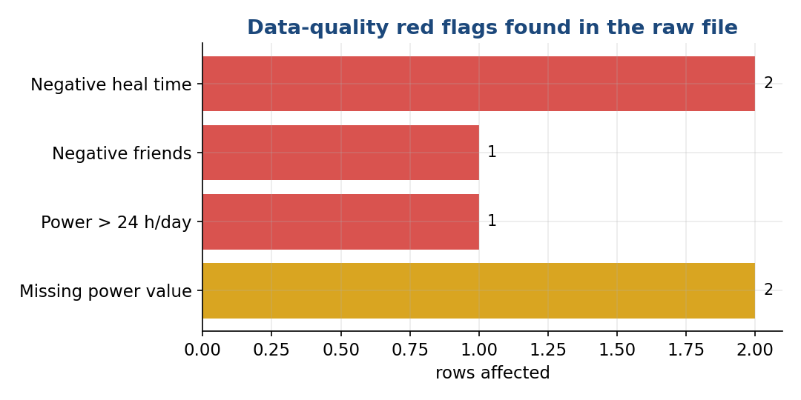
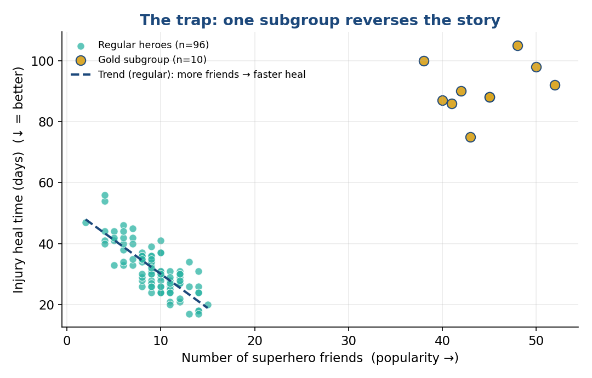
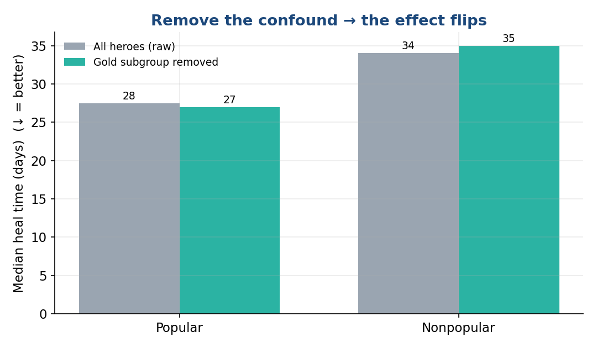

A worked example in data hygiene, confounding, and not trusting auto-generated analysis.
Run the numbers on the raw file and you "find" that popular heroes recover worse. Clean the data and remove one confounding subgroup, and the effect reverses.
| Approach | Result | Verdict |
|---|---|---|
| Naive — stats on raw data | Popular heal slower (41.6 vs 34.7 days, MWU p=0.008) | ✗ Confounded |
| Cleaned + de-confounded | Popular heal faster (median 27 vs 35 days, p<0.001); recovery quality equal (p=0.77) | ✓ Real signal |
number_of_superhero_friends (median split, and kept continuous so the answer doesn't hinge on a cutoff).injury_heal_time_days (lower = better) and recovery_quality_score (higher = better).Before any test: eyeball the min/max. This file is salted with errors.
4 rows have impossible values and were removed (110 → 106).

The bigger trap — a confounding subgroup. The 10 gold-outfit heroes are a distinct cluster: ~44 friends and ~91-day heal times, vs. ~9 friends / ~31 days for everyone else. Being both high-popularity and slow-healing, they single-handedly manufacture the "popularity hurts recovery" headline — a textbook Simpson's paradox.
Toggle the gold subgroup to watch the relationship reverse.
Each point is a hero. The dashed line is the trend among regular heroes (downward = more friends → faster heal).
Grey = raw (all heroes). Teal = with the gold confound removed. Watch the bars cross.
Regeneratable PNGs (for slides / sharing) — produced by make_charts.py.


Every number above is reproducible. Three scripts, shown in full.
"""
Superhero recovery analysis
Research question: Are there differences between popular and nonpopular
superheroes regarding their ability to recover from injury?
Approach:
- "Popularity" has no direct column -> operationalize via number_of_superhero_friends.
- "Recovery from injury" has TWO measures:
injury_heal_time_days (lower = better recovery)
recovery_quality_score (higher = better recovery)
- Compare popular vs nonpopular (median split on friends), AND
treat friends as continuous (correlation) so the answer doesn't hinge on
an arbitrary cutoff.
- Check obvious confounds (power usage, outfit color).
"""
import pandas as pd, numpy as np
from scipy import stats
df = pd.read_csv("superheroes_dataset.csv")
print("="*70)
print("1. DATA PROFILE")
print("="*70)
print(f"rows={len(df)} cols={df.shape[1]}")
print("missing values:\n", df.isna().sum().to_string())
num = ["number_of_superhero_friends","injury_heal_time_days",
"recovery_quality_score","average_hours_of_superhero_power_used_per_day"]
print("\nnumeric summary:\n", df[num].describe().round(2).to_string())
print("\noutfit_color_code counts:\n", df["outfit_color_code"].value_counts().to_string())
# ---- Define popularity (median split on friends) ----
med = df["number_of_superhero_friends"].median()
df["popular"] = np.where(df["number_of_superhero_friends"] > med, "popular", "nonpopular")
print("\n" + "="*70)
print(f"2. POPULARITY DEFINITION (median friends = {med}; '>median' = popular)")
print("="*70)
print(df["popular"].value_counts().to_string())
def compare(col, higher_is_better):
pop = df.loc[df.popular=="popular", col]
non = df.loc[df.popular=="nonpopular", col]
t, p_t = stats.ttest_ind(pop, non, equal_var=False)
u, p_u = stats.mannwhitneyu(pop, non, alternative="two-sided")
# Cohen's d (pooled)
nx, ny = len(pop), len(non)
sp = np.sqrt(((nx-1)*pop.var(ddof=1)+(ny-1)*non.var(ddof=1))/(nx+ny-2))
d = (pop.mean()-non.mean())/sp
better = "popular" if (pop.mean()>non.mean())==higher_is_better else "nonpopular"
print(f"\n--- {col} ({'higher' if higher_is_better else 'lower'} = better) ---")
print(f" popular : mean={pop.mean():.2f} median={pop.median():.1f} sd={pop.std():.2f}")
print(f" nonpopular: mean={non.mean():.2f} median={non.median():.1f} sd={non.std():.2f}")
print(f" Welch t={t:.2f} p={p_t:.4f} | Mann-Whitney U p={p_u:.4f} | Cohen's d={d:+.2f}")
print(f" -> direction favors: {better} {'(SIG p<.05)' if min(p_t,p_u)<.05 else '(n.s.)'}")
return min(p_t, p_u)
print("\n" + "="*70)
print("3. GROUP COMPARISON: popular vs nonpopular recovery")
print("="*70)
p1 = compare("injury_heal_time_days", higher_is_better=False)
p2 = compare("recovery_quality_score", higher_is_better=True)
print("\n" + "="*70)
print("4. ROBUSTNESS: friends as CONTINUOUS (no arbitrary cutoff)")
print("="*70)
for col in ["injury_heal_time_days","recovery_quality_score"]:
r,p = stats.pearsonr(df["number_of_superhero_friends"], df[col])
rho,ps = stats.spearmanr(df["number_of_superhero_friends"], df[col])
print(f" friends vs {col:24s}: Pearson r={r:+.2f} (p={p:.3f}) | Spearman rho={rho:+.2f} (p={ps:.3f})")
print("\n" + "="*70)
print("5. CONFOUND CHECK")
print("="*70)
print(" Does power usage relate to friends or recovery?")
for a,b in [("number_of_superhero_friends","average_hours_of_superhero_power_used_per_day"),
("average_hours_of_superhero_power_used_per_day","injury_heal_time_days"),
("average_hours_of_superhero_power_used_per_day","recovery_quality_score")]:
r,p = stats.pearsonr(df[a], df[b])
print(f" {a} vs {b}: r={r:+.2f} (p={p:.3f})")
print("\n Recovery by outfit color (mean heal_time / quality):")
print(df.groupby("outfit_color_code")[["injury_heal_time_days","recovery_quality_score"]]
.agg(["mean","count"]).round(2).to_string())
print("\n" + "="*70)
print("VERDICT")
print("="*70)
sig = "YES" if min(p1,p2) < .05 else "NO"
print(f" Significant popular-vs-nonpopular recovery difference? {sig} (best p={min(p1,p2):.4f})")
The lesson isn't the superheroes. An AI/tool that just runs a t-test and reports "p = 0.008, popular heroes recover worse" hands you the opposite of the truth.
Three habits would have caught it: (1) read the min/max before testing — negative heal times are a tell; (2) compare robust vs. parametric stats — a Pearson/Spearman sign flip screams "outliers"; (3) look for subgroups before trusting an aggregate p-value.
So, the real answer: among ordinary heroes, more popular ones heal faster, with equal recovery quality. The "popularity hurts recovery" finding is an artifact of impossible values and one outlier subgroup — not a real effect.